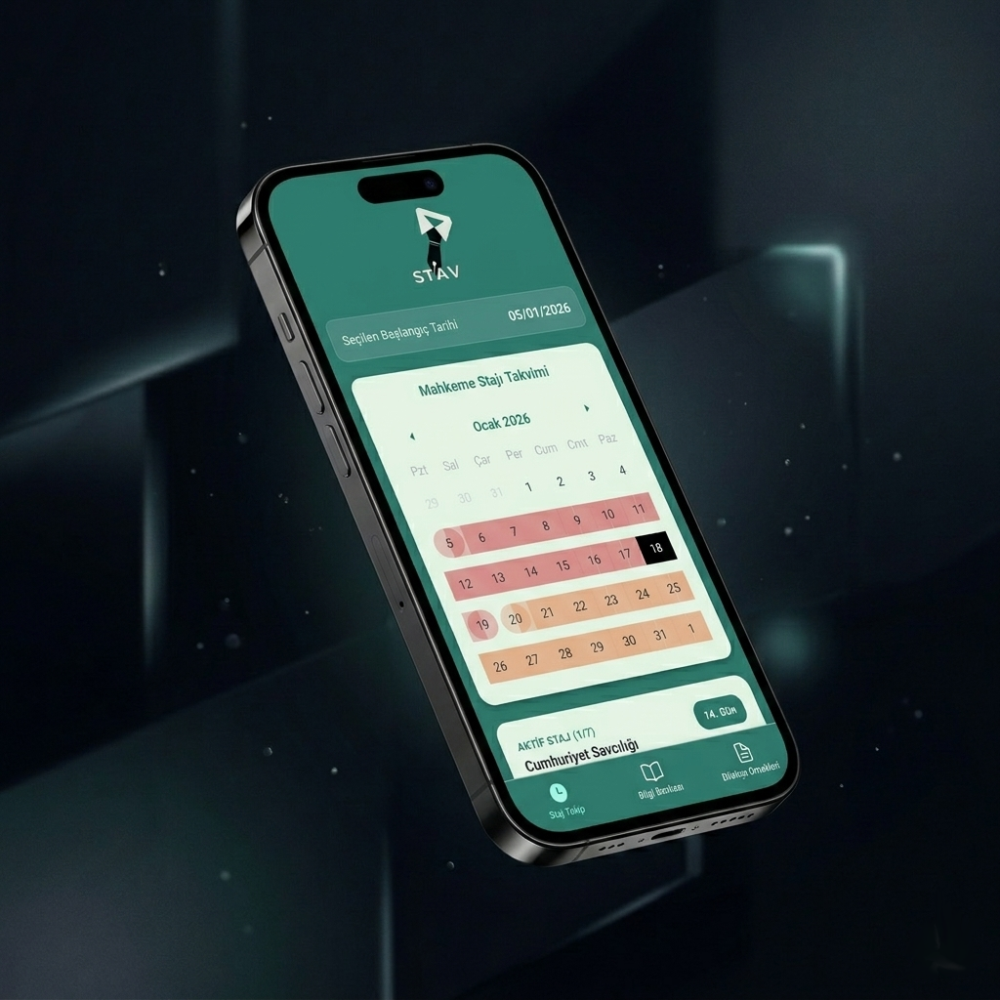

Avukatlık Staj
Takibi: ST/AV
Staj sürecinizi uçtan uca takip edin, bilgi bankasından mesleki içeriklere ulaşın ve ihtiyaç duyduğunuz dilekçe örneklerini anında indirin.

Öne Çıkan Özellikler
ST/AV, stajyer avukatların kariyer yolculuklarını kolaylaştırmak için tamamen bu sürece özel tasarlandı.
Süreç Takibi ve Bildirim
Staj sürecinizin her anını takip edin. Süreniz dolmadan bir gün önce alacağınız bildirimle hiçbir resmi işlemi atlamayın.
Kapsamlı Bilgi Bankası
Staj ve avukatlık mesleğinin incelikleriyle ilgili yüzlerce içeriğe kolayca göz atarak mesleki gelişiminize hız katın.
Dilekçe Örnekleri
Adliye ve resmi kurumlarda ihtiyaç duyabileceğiniz en güncel ve profesyonel dilekçe şablonlarını doğrudan cihazınıza indirin.
Staj Sürecinde Dijital Asistanınız
Karmaşık prosedürler arasında kaybolmaya son. ST/AV, ihtiyaç duyduğunuz tüm araçları sezgisel ve basit bir arayüzle sunar.
- ✔ Otomatik Bitiş Bildirimi
- ✔ Güncel Hukuki Bilgi Bankası
- ✔ Zengin ve İndirilebilir Dilekçe Şablonları
ST/AV'ı Bugün İndirin
Stajyer avukatlar için geliştirilmiş yol arkadaşınızla hemen tanışın.